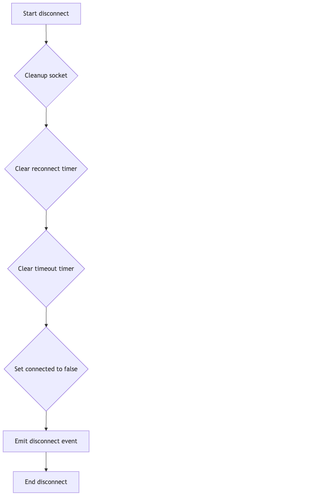
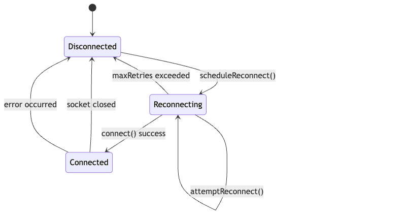

The code defines a NativeSocket class for inter-process communication using Unix domain sockets or Windows named pipes. It includes a Jest test suite to ensure the NativeSocket class functions correctly, covering connection management, message sending/receiving, error handling, and reconnection logic. The Jest configuration file sets up the testing environment for a TypeScript project.
"TypeScript, Node.js, Jest"
Key features include: NativeSocket class with setupServer(), connect(), disconnect(), emit(), and on() methods; automatic reconnection logic; payload size limits; error handling; Jest unit tests covering various scenarios; Jest configuration for TypeScript projects with code coverage reporting.
Here are some helpful visuals to help you understand the project:
NativeSocket Setup Server Flowchart
Full Description:
This flowchart outlines the steps involved in setting up the NativeSocket server, including checking for existing socket files, creating the server, setting up listeners, and handling errors. It provides a visual representation of the server setup process.

NativeSocket Connect Flowchart
Full Description:
This flowchart illustrates the steps involved in connecting to the NativeSocket server, including creating the connection, setting up timeout, and handling connection events. It provides a visual representation of the client connection process.

NativeSocket Disconnect Flowchart
Full Description:
This flowchart outlines the steps involved in disconnecting the NativeSocket, including cleaning up the socket, clearing timers, and emitting the disconnect event. It provides a visual representation of the disconnection process.

NativeSocket Reconnect State Machine
Full Description:
This state machine diagram illustrates the reconnection logic of the NativeSocket class, including the initial disconnected state, the reconnection attempts, and the connected state. It provides a visual representation of the reconnection process.
N/A
{kind=link}
{kind=link}